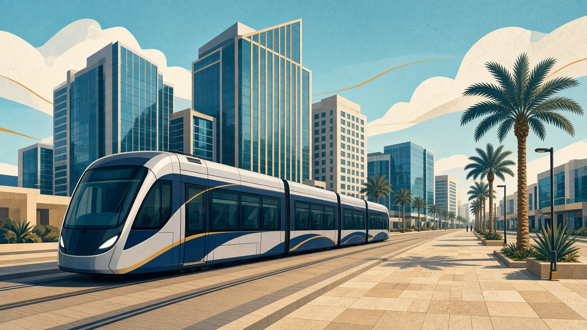
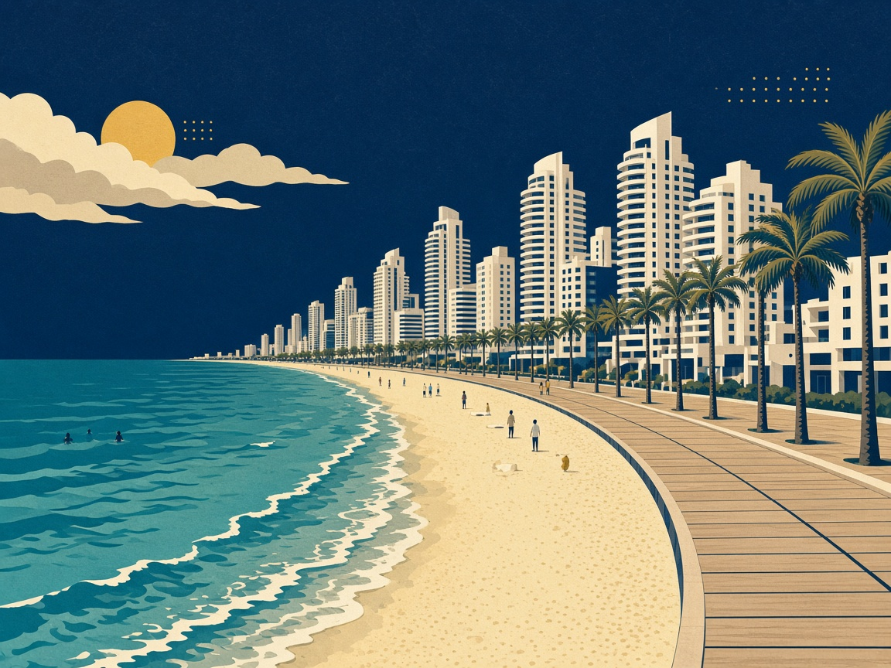
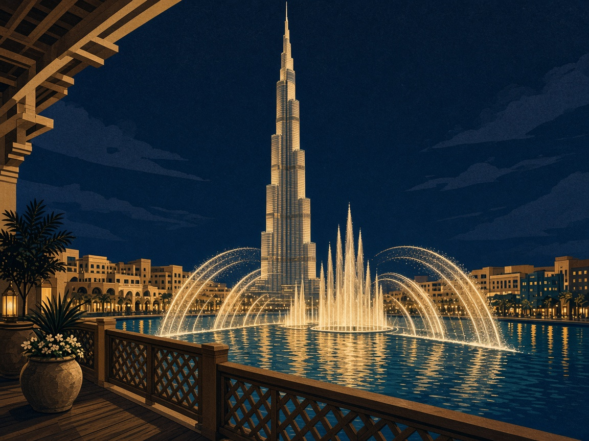
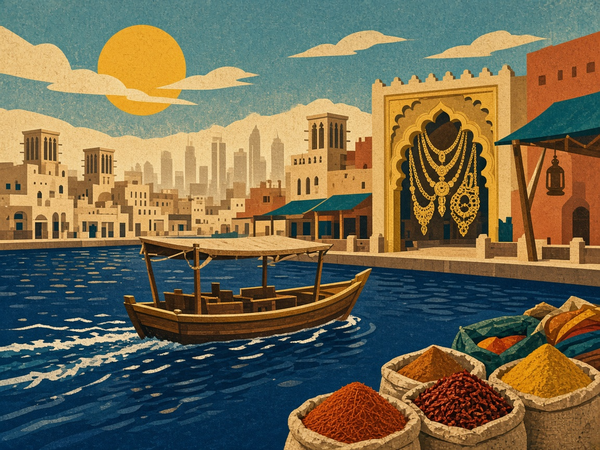
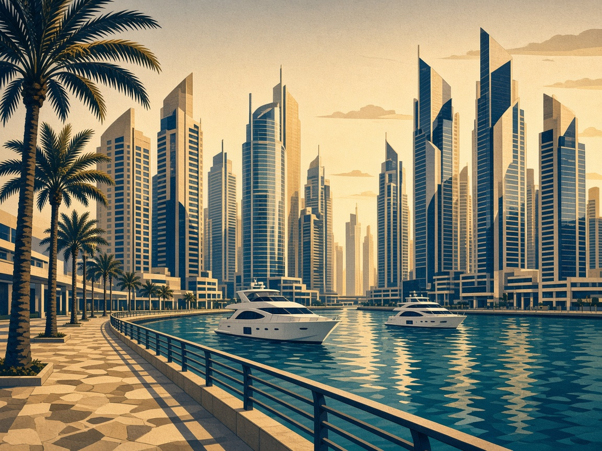
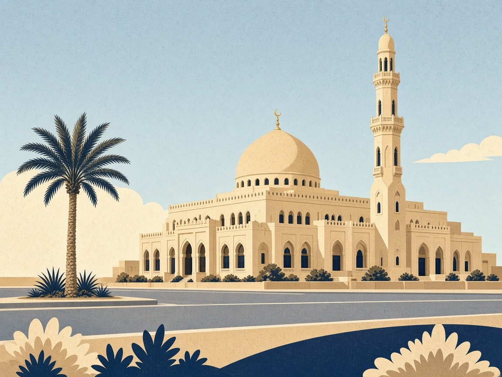

T1 Трамвай
- Media Cityпешком от отеля
- JLTпереход на метро DMCC
- Dubai Marina Mallначало Marina Walk
- JBR 1 · JBR 2пляж и променад The Walk

Личный гид · 1 человек
Вы живёте в Arjaan by Rotana, Dubai Media City. Ниже — куда ехать, на чём, и как понять, что вы на месте. Завтрак и ужин в отеле, на улице только обед.
Ваша точка
Dubai Media City
King Salman Bin Abdulaziz Al Saud St, Al Sufouh 2, Dubai, UAE.Ориентир: район Dubai Media City, рядом со зданием MBC.
До трамвайной станции Media City — несколько минут пешком. Это главная точка, из которой начинается почти каждый день.
Arjaan by Rotana
Dubai Media City

Как двигаться
Трамвай связывает отель с пляжем JBR и Мариной. Чтобы попасть в центр или в старый город, доезжайте до JLT и переходите на красную линию метро, станция DMCC.
Садитесь в сторону Centrepoint. Между этими станциями будут и другие остановки.
На BurJuman садитесь в сторону e& (на старых схемах — Etisalat). Нужная станция следующая.
Из центра: красная линия в сторону Life Pharmacy или Expo 2020. Обе ветки проходят DMCC. Выходите на DMCC и садитесь на трамвай до Media City.
Из JBR и Марины метро не нужно: трамвай идёт прямо до Media City.
Прямого метро нет. День 3 — на такси. Ориентир водителю: Umm Suqeim, у мечети Al Manara.
Dubai Frame. От метро max пешком 15–20 минут или короткое такси до Ворот 4 парка Zabeel.
Ближайшее метро — World Trade Centre, идти около 20 минут. До Jumeirah Beach Road проще на такси.
Четыре дня
Downtown и JBR
Башня и фонтаны стоят в одном месте. Пляж JBR — в другой стороне города, у вашего трамвая.
Центр — одной поездкой: трамвай до JLT, метро DMCC, красная линия в сторону Centrepoint, выход Burj Khalifa / Dubai Mall. Смотровую можно днём, фонтаны — вечером там же. JBR поставьте отдельно: утром до центра или уже после возвращения к отелю. Пешком из молла на этот пляж не попадают.
Burj Khalifa & Dubai Mall, Downtown Dubai
Это центр города. От метро идите по крытому переходу в Dubai Mall, заложите 15–20 минут. Вход на смотровую — нижний этаж молла, таблички Lower Ground и At The Top.

The Beach, Jumeirah Beach Residence
The Beach — Dubai Marina — Jumeirah Beach Residence — Dubai.
Пляжная полоса вдоль променада The Walk. От отеля пешком на трамвай Media City, выходите на JBR 1 или JBR 2. Море будет со стороны променада.

Dubai Fountain, Souk Al Bahar
Фонтан у подножия Бурдж-Халифы, рядом с Dubai Mall. Бесплатная точка с видом — терраса Souk Al Bahar. Это тот же район, что и смотровая: останьтесь к вечеру или вернитесь сюда, а не езжайте «после JBR» как на новую точку.
Домой из Downtown: красная линия в сторону Life Pharmacy или Expo 2020 до DMCC, затем трамвай до Media City. Из JBR — сразу трамвай до Media City.
Бу-Дубай и Дейра
Один ручей, два берега. Квартал и набережная — на вашей стороне, рынки — за лодкой.
Красная линия до BurJuman, пересадка на зелёную в сторону e&. Выходите на следующей станции — Sharaf DG. По указателям идите в исторический район Аль-Фахиди. Рынки в Дейре — через абру за 1 AED. Al Seef идите пешком до лодки или после возвращения: набережная на той же стороне, что и квартал.

Al Fahidi Historical Neighbourhood
Станция метро Sharaf DG на зелёной линии. На схемах и в разговоре её ещё называют Al Fahidi. Выходите и следуйте указателям к историческому району: узкие улочки и башни-ветроуловители.

Spice Souk & Gold Souk, Deira
После квартала дойдите до пристани абры. Лодка за 1 AED пересекает ручей и высаживает у рынков Дейры. Это короткий и живописный путь. Если лодку пропустите, запасной ход — та же зелёная линия дальше, до станции Gold Souq.

Al Seef, Dubai Creek
Современная набережная рядом с Аль-Фахиди, вдоль того же ручья. Идите пешком по берегу. На сторону Дейры за ней ехать не нужно.
Домой: абра обратно на сторону Аль-Фахиди, если вы на рынках. Дальше зелёная линия в сторону Creek — одна остановка до BurJuman, затем красная в сторону Life Pharmacy или Expo до DMCC и трамвай до Media City.
Берег и канал
Два разных выезда. Пляж — на такси, яхты — на вашем трамвае.
Марину и JBR удобно смотреть от отеля на трамвае. Kite Beach стоит дальше по побережью, у Umm Suqeim: прямого метро нет, берите такси. Ravi Restaurant — в районе Al Satwa, это третий адрес. Если не хотите отдельный крюк, обед замените на Operation: Falafel в JBR.
Kite Beach, Umm Suqeim 1
Umm Suqeim 1, Jumeirah Road, Dubai.
Пляж за торговым центром Saga World. Ориентир — большая парковка рядом с мечетью Al Manara Mosque. Скажите водителю: Kite Beach, Al Manara Mosque.

Marina Walk, Dubai Marina
Трамвай до Dubai Marina Mall или до JBR 1 / JBR 2. От станций начинается Marina Walk — пешеходная дорожка вдоль канала с яхтами.
Домой из Марины и JBR: трамвай до Media City. С Kite Beach — такси до отеля или до ближайшей удобной вам точки у трамвая.
Парк и Jumeirah
Сначала парк Заабиль на метро. Мечеть и пляж стоят на одной дороге — их соединяет одно такси.
Утром красная линия в сторону Centrepoint до станции max. Вход в Dubai Frame только через Gate 4. Затем такси на Jumeirah Beach Road: сначала мечеть напротив Palm Strip Mall, потом общественный пляж у Burj Al Arab. Это другой пляж, не Kite Beach из третьего дня.
Dubai Frame, Zabeel Park
Zabeel Park, Dubai, UAE.
Метро, красная линия, станция max — бывшая Al Jafiliya. От станции до Gate 4 пешком около 15–20 минут или короткое такси. Водителю: Dubai Frame, Zabeel Park, Gate 4.

Jumeirah Mosque
Jumeirah Beach Road, Jumeirah 1, Dubai.
Мечеть на главной дороге Jumeirah Beach Road, напротив торгового центра Palm Strip Mall. Ближайшее метро — World Trade Centre, от него около 20 минут пешком. Проще доехать на такси прямо к мечети.

Jumeirah Public Beach, near Burj Al Arab
4 2C St, Umm Suqeim 3, Dubai.
Общественный пляж сразу у отеля Burj Al Arab, на той же прибрежной линии Jumeirah Beach Road. Парус видно с песка. Сюда удобно заехать после мечети.
Домой с побережья Джумейры — на такси до Arjaan by Rotana, Dubai Media City, либо до трамвая Media City, если так удобнее по цене в приложении.
Где поесть днём
Два кафе стоят в вашем Media City. Falafel — на променаде JBR. Ravi — отдельная легенда в Al Satwa.
2 The Walk, near Sofitel Hotel, JBR
На променаде The Walk в JBR. Ищите вывеску рядом с отелем Sofitel. Шаурма около 15.5–16.5 AED, сэндвич с фалафелем — 12 AED.
По пути в JBR Карта247 Al Satwa Road, Jumeirah
Легендарное пакистанское место на главной улице района Al Satwa. Есть филиал в Karama. Полный обед обычно 25–45 AED.
Отдельный заезд в Satwa КартаGround Level, CNN Building, Al Falak Street, Dubai Media City
Первый этаж здания CNN в вашем районе. Имеет смысл, если хотите кофе, не уезжая далеко от отеля.
Рядом с отелем КартаENOC Petrol Station, Sheikh Zayed Service Road, Dubai Media City
Прямо на территории заправки ENOC в Media City. Удобный короткий кофе у отеля.
Рядом с отелем КартаЕда вне отеля
Завтраки и ужины в отеле. На четыре обеда заложено 80–137 AED, примерно 1 800–3 080 ₽.
Фалафель в JBR дешевле: шаурма 15.5–16.5, сэндвич 12 AED.
Билеты
≈ 6 410 ₽ · ориентир на 2026 год
Про цены
В 2026 году стандартный билет на смотровую чаще указывают около 189 AED, экскурсию в мечети — 45 AED с человека. Dubai Frame остаётся на уровне 50 AED. Закатный слот на башню в эту сумму не входит. Перед визитом сверьте время на кассе площадки: у мечети экскурсия идёт по сеансам.
Рубли посчитаны по вашему курсу, около 22,5 ₽ за 1 AED.
На одного человека
Левая колонка — карта Nol и поездки на трамвае и метро. Правая — ваш же расчёт «с такси»: он выше всего на 0–15 AED.
| Статья | Эконом, AED | Эконом, ₽ | С такси, AED | С такси, ₽ |
|---|---|---|---|---|
| Билеты | 285 | ≈ 6 410 | 285 | ≈ 6 410 |
| Транспорт, карта и поездки | 130–150 | ≈ 2 925–3 375 | 130–165 | ≈ 2 925–3 710 |
| Еда вне отеля | 80–137 | ≈ 1 800–3 080 | 80–137 | ≈ 1 800–3 080 |
| Итого | ≈ 495–572 | ≈ 11 140–12 870 | ≈ 495–587 | ≈ 11 140–13 210 |
Kite Beach, мечеть и ворота Frame, если ехать на такси, легко выходят за вилку в 15 AED. Перед посадкой посмотрите цену в приложении. Если в третий день взять фалафель вместо Ravi, еда окажется ближе к нижней границе.
Карманная шпаргалка